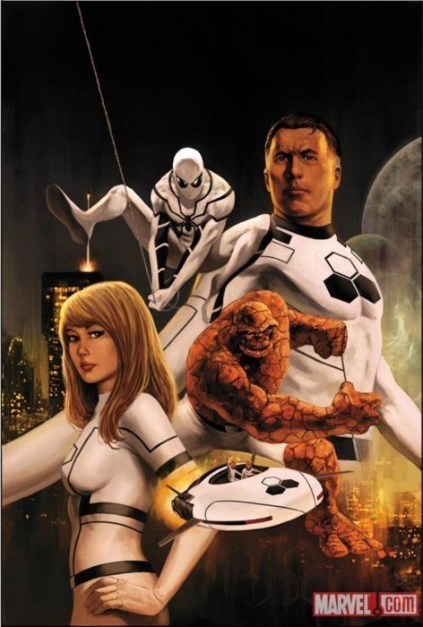

Mon, 14 Feb 2011 04:17:00 · FF · Fantastic Four · Marvel · Comics · Spider-Man
Spidey to Join Fantastic Four

Following the death of Human Torch, guess who’s entering the picture? Yup, that Peter Parker bloke. What’s more, the team will no longer be called ‘Fantastic Four’ but opt for rather ambiguous name 'Future Foundation’ or FF.
Let’s see how the Black & White team fare when it comes to crime fighting. I guess, we all have to get use seeing the trio in new outfit other than their usual blue ones. For sure, adding Spider-Man won’t hurt, but I think this might be a bit overkill as we’ve seen Spidey every-friggin’-where already!
Read more 'FF’ news here.